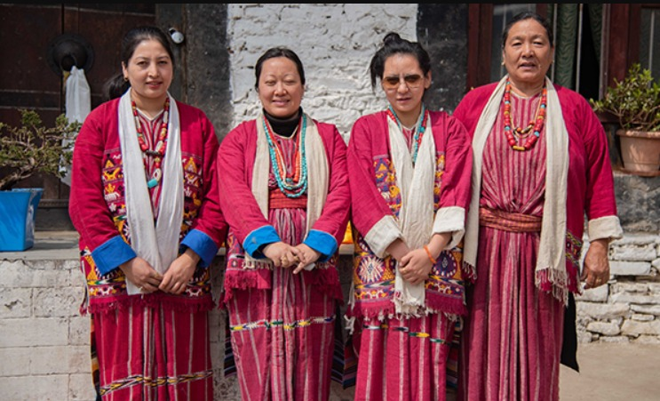

Monpa Tribe Traditional Attire:
The Monpa tribe, residing primarily in the Tawang and West Kameng districts, is known for its vibrant and elegant traditional attire. Their clothing reflects their Buddhist heritage and the cold, mountainous climate of the region.Monpa women often wear woolen gowns called Shingka, accompanied by intricately woven belts, while the men wear Gale, a thick woolen garment. The wool used is often derived from yak, providing both warmth and durability, making the attire functional in the harsh winters.